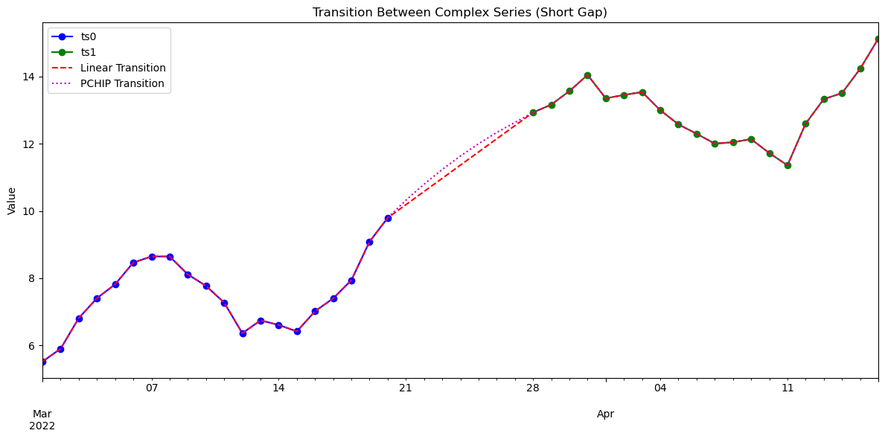
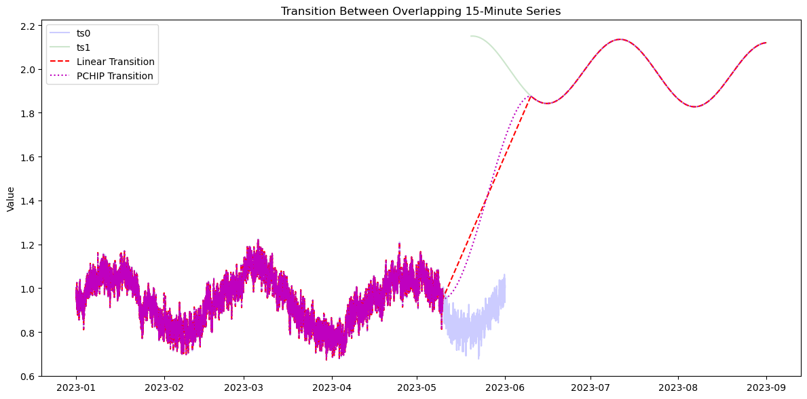

Smooth transitions between time series¶
The
transition_ts function creates a smooth connection between two time series that share a common variable but differ in time coverage or conditions.It provides several ways to handle the interval between them:
- ``method=”linear”`` — connects the endpoint of the first and the start of the second series with a straight line.This is useful when there is a gap or a natural handoff between segments.
- ``method=”pchip”`` — uses a shape-preserving cubic interpolation (PCHIP) through the same endpoints, optionally using neighboring points on each side (
overlap) to keep local trends smooth.This approach maintains the monotonicity and curvature of the original data near the junction. - ``method=”blend”`` — operates inside an overlapping window where both series already have values.Instead of bridging a gap, it performs a linear combination of the two, gradually shifting weight from the first series to the second across the window—so at the start it is entirely
ts0, and by the end it is entirelyts1.
Together, these modes cover both disjoint and overlapping transitions:
linear and pchip span the gap between endpoints, while blend performs a controlled merge within an overlap.
This notebook demonstrates the transition_ts function to glue or merge two time series with smooth transitions, comparing linear interpolation, PCHIP interpolation, and blended overlap across representative scenarios.
[16]:
import pandas as pd
import numpy as np
from scipy.interpolate import PchipInterpolator
from vtools import transition_ts
import matplotlib.pyplot as plt
[17]:
import numpy as np
date0 = pd.date_range("2022-03-01", periods=30, freq="d")
date1 = pd.date_range("2022-03-15", periods=30, freq="d")
DATALEN=30
# Seasonal + trend + noise
ts0 = pd.Series(5 + 0.25*np.arange(DATALEN) + 2*np.sin(np.linspace(0, 2*np.pi, DATALEN)) + np.random.normal(0, 0.3, DATALEN), index=date0)
ts1 = pd.Series(12 + 0.1*np.arange(DATALEN) + 1.5*np.sin(np.linspace(0, 2*np.pi, DATALEN) + 0.5) + np.random.normal(0, 0.3, DATALEN), index=date1)
# Transition over the 6-day gap between ts0 and ts1
glue_linear = transition_ts(ts0, ts1, method='linear', window=["2022-03-21", "2022-03-28"], return_type='series')
glue_pchip = transition_ts(ts0, ts1, method='pchip', window=["2022-03-21", "2022-03-28"], overlap=(3, 3), return_type='series')
glue_blend = transition_ts(ts0, ts1, method='blend', window=["2022-03-21", "2022-03-28"], return_type='series')
# Plot
fig, ax = plt.subplots(figsize=(12, 6))
ts0.plot(ax=ax, style='bo-', label='ts0')
ts1.plot(ax=ax, style='go-', label='ts1')
glue_linear.plot(ax=ax, style='r--', label='Linear Transition')
glue_pchip.plot(ax=ax, style='m:', label='PCHIP Transition')
glue_blend.plot(ax=ax, style='c-.', label='Blend Transition')
ax.legend()
ax.set_title("Transition Between Complex Series (Short Gap)")
ax.set_ylabel("Value")
plt.tight_layout()
plt.show()

[18]:
import numpy as np
def pink_noise(size, alpha=1.0):
f = np.fft.rfftfreq(size)
f[0] = 1e-6 # avoid division by zero
spectrum = 1 / f**(alpha / 2.0)
phases = np.exp(2j * np.pi * np.random.rand(len(f)))
signal = np.fft.irfft(spectrum * phases, n=size)
return signal / np.std(signal)
# Create overlapping 15-minute time series
date0 = pd.date_range("2023-01-01 00:00", "2023-06-01 00:00", freq="15min")
date1 = pd.date_range("2023-05-20 01:30", "2023-09-01 00:00", freq="15min") # overlaps by 10 points
t0 = np.linspace(0, 1, len(date0))
t1 = np.linspace(0, 1, len(date1))
ts0_values = (
1.0 +
0.05 * pink_noise(len(date0)) +
0.15 * np.sin(2 * np.pi * 3 * t0) + # 3 cycles over the entire interval
0.05 * t0 # slow upward trend
)
ts1_values = (
2.0 +
0.0 * pink_noise(len(date1)) +
0.15 * np.sin(2 * np.pi * 2 * t1 + 1.5) + # 2 cycles, phase shifted
-0.03 * t1 # slight downward trend
)
ts0 = pd.Series(ts0_values, index=date0)
ts1 = pd.Series(ts1_values, index=date1)
# Transition over the overlapping period
gap_start = "2023-05-10 01:15"
gap_end = "2023-06-10 02:15"
glue_linear = transition_ts(ts0, ts1, method='linear', window=[gap_start, gap_end], return_type='series')
glue_pchip = transition_ts(ts0, ts1, method='pchip', window=[gap_start, gap_end], overlap=('4d', '4d'), return_type='series')
glue_p = transition_ts(ts0, ts1, method='pchip', window=[gap_start, gap_end], overlap=('4d', '4d'), return_type='series')
print("plotting")
# Plot
fig, ax = plt.subplots(figsize=(12, 6))
ax.plot(ts0.index, ts0.values, 'b-', label='ts0',alpha=0.2)
ax.plot(ts1.index, ts1.values, 'g-', label='ts1',alpha=0.2)
ax.plot(glue_linear.index, glue_linear.values, 'r--', label='Linear Transition')
ax.plot(glue_pchip.index, glue_pchip.values, 'm:', label='PCHIP Transition')
ax.legend()
ax.set_title("Transition Between Overlapping 15-Minute Series")
ax.set_ylabel("Value")
plt.tight_layout()
plt.show()
plotting
